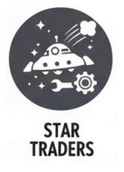
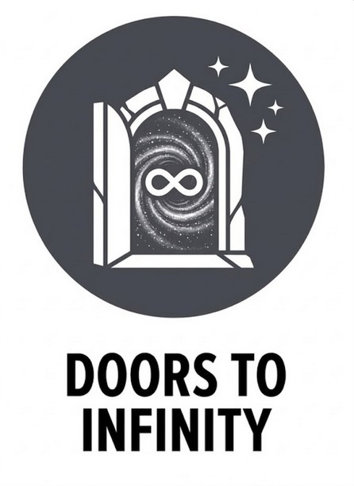
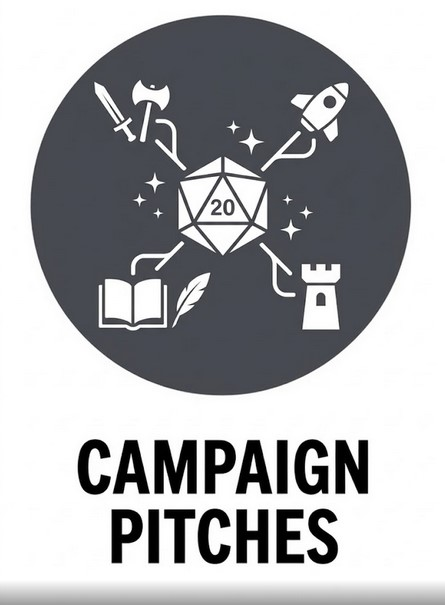
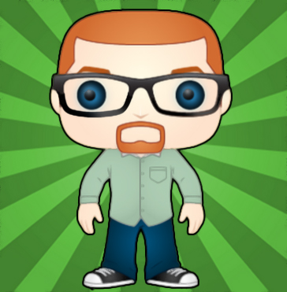

A collection of web tools, play aids, and resources for my TTRPG campaigns.

Keep your blasters ready and the engine running.
Based on the Bulldogs! TTRPG, Star Traders is a classic science-fantasy space opera set in The Fringe, the lawless outer frontier of the galaxy, where players are smugglers, freebooters, and daring adventurers piloting a beloved but barely functional starship.
The campaign centers on pulp-style action, high-risk trade and smuggling runs, dangerous bargains, exotic alien worlds, and the constant pressure of debts, rival factions, espionage, and betrayal. Fortune always seems just one jump away... if bad luck, greedy employers, or the powers of the Fringe do not catch up first.

Open the door. Explore Infinity.
Doors to Infinity is a Fate hack inspired by Lords of Gossamer and Shadow and Roger Zelazny's Chronicles of Amber, set across an endless multiverse of parallel realities known as the Gossamer worlds.
These worlds are separated by the Shadow, an infinite, howling void of nonexistence, and connected by the Grand Stair, a vast labyrinth of stairways, corridors, and mystical Doors that lead from one universe to another.
Players take the roles of Wardens of the Grand Stair, rare individuals gifted with the power to perceive and open these Doors. Where others see only an ordinary doorway, a Warden sees a path to wonder, danger, intrigue, and worlds beyond imagination.

Find your next adventure.
Descriptions of some of my favorite homebrew campaign settings. Each includes a short description and a link to a longer Player Intro Doc new players can look at to help pick the next campaign.
Safety tools, content boundaries, and thoughtful play.
Good boundaries help create better games. I want my campaigns to be exciting, dramatic, and sometimes intense, while still making sure everyone at the table feels comfortable and respected.
To support that, I’ve included two helpful resources:

45+ Years of Gaming and Still Learning New Things.
I've been playing in and running TTRPGS since the late 70's and have developed a style all my own over that time. Strongly influenced by OSR-sensibities (though not quite toeing the line) and pulp science fiction and fantasy of the 50's through the 80's, I try to run a free-flowing, inclusive game that rewards creative solutions within the logic of the setting.